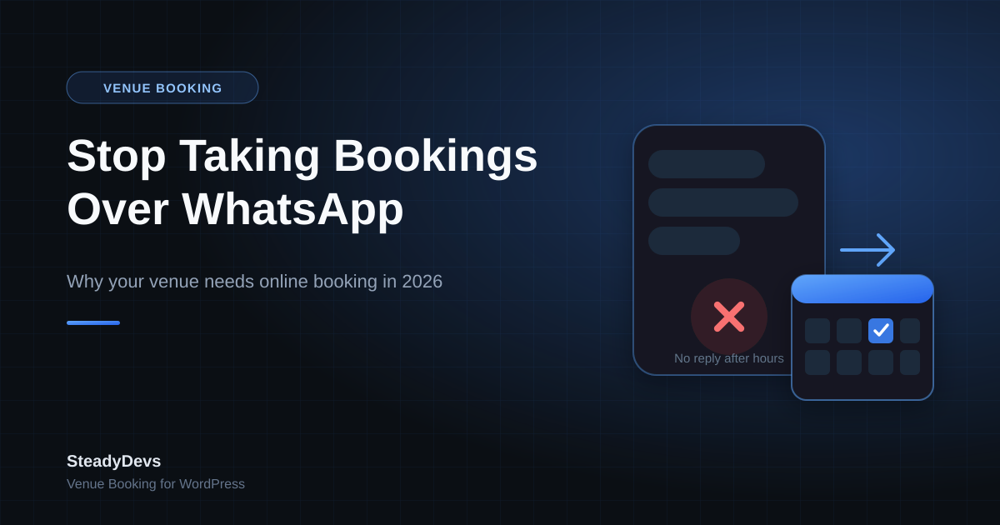

Stop Taking Bookings Over WhatsApp: Why Your Venue Needs Online Booking in 2026
Ask most venue owners how customers book—a futsal court, a padel bay, a massage room, a meeting room, a table—and you'll get some version of the same answer: "They message us on WhatsApp." Someone checks a wall calendar or a shared Google Sheet, replies with availability, and hopes nobody double-books the slot before the reply goes out.
It works, until it doesn't. And the moments it doesn't work—a double-booked bay on a Saturday night, a customer who messaged at 11pm and never got a reply, a slot held for someone who never confirms—are exactly the moments that cost you a customer for good.
The Real Cost of Manual Booking
None of this shows up as a line item on your P&L, which is exactly why it's easy to underestimate. But it adds up in ways that are very real:
- Lost bookings after hours. A customer messaging at 10pm wants an answer now, not tomorrow morning. Most will just message a competitor instead.
- Double bookings. Two staff members, two WhatsApp threads, one slot—someone eventually finds out the hard way, usually the customer, standing at your door.
- Staff time spent replying, not serving. Every "is 7pm free?" message is a small interruption. Multiply that by a busy week and it's hours of admin your team could spend elsewhere.
- No visibility into performance. If bookings live in chat threads and a spreadsheet, you can't easily see which resource earns the most, which hours are wasted, or whether your pricing makes sense.
- Awkward money conversations. Peak-hour pricing, deposits and cancellations are hard to enforce consistently over chat—it depends on whoever happens to reply.
A simple test: ask yourself how many bookings you think you lost last month simply because nobody replied fast enough, or because a slot looked free and wasn't. If the honest answer is "more than a couple," the manual system is already costing you more than a booking tool would.
What Online Booking Actually Changes
The venues that move away from WhatsApp-and-spreadsheet booking aren't necessarily buying anything exotic—they're closing four specific gaps.
1. Availability that's visible around the clock
Customers see real, live availability and book in a few clicks—at 11pm, on a Sunday, whenever they happen to think of it. You don't need a staff member awake to capture the booking.
2. A slot can't be sold twice
Once a booking for a resource, date and time is confirmed, the system won't let another customer take the same slot. That single guarantee removes the most reputation-damaging failure mode in venue booking.
3. You keep control, not the calendar
A common worry with online booking is losing the ability to say no—to a customer with a history of no-shows, or a booking that doesn't fit your schedule. A good system still puts every booking into a pending queue for you to approve, reject or adjust, so the software handles the busywork and you keep the judgment calls.
4. The data tells you what your business is actually doing
Which resource earns the most per available hour? Which hours sit empty? Is your peak-pricing actually being applied, or ignored under pressure? None of that is answerable from a WhatsApp thread—it's automatic once bookings run through a system.
"But I Already Have a WordPress Site"
This is usually where venue owners assume online booking means a new website, a new vendor, and months of setup. It doesn't have to. If you're already on WordPress, a booking plugin adds live availability, admin approval and double-booking protection directly onto the site you already have—no migration, no new domain to manage, no separate login for customers to learn.
SteadyDevs Venue Booking was built for exactly this: courts, bays, studios, rooms, tables and rental equipment, with a multi-step booking flow, admin approval, peak/off-peak pricing, automatic reminders, and utilisation & revenue reports—dropped into your existing WordPress pages with a shortcode or the Elementor widget. It matches your site's colours and theme, so it looks like it was built in, not bolted on.
See It Running on a Real Booking Form
Try SteadyDevs Venue Booking free for 14 days—no credit card required. Set up your real resources, pricing and hours, and take real bookings while you decide.
Start Your Free 14-Day TrialMaking the Switch Without Disrupting Regulars
You don't need to flip a switch and force every customer to change habits overnight. Most venues run both channels for a short transition period: keep answering WhatsApp for existing regulars while pointing new enquiries and your website traffic to the online form. Within a few weeks, the ones who try online booking once tend to stick with it—it's simply less friction than waiting for a reply.
Don't wait for a bad night to force the decision. The venues that switch reactively—after a public double-booking complaint, or a busy weekend that went badly—lose more goodwill than the ones who move proactively on a quiet week.
The Bottom Line
WhatsApp and a shared spreadsheet got you this far, and that's a real achievement—but it's a system with a ceiling. Every slot that goes unanswered overnight, every double-booked bay, every hour your staff spends replying to "is Saturday free?" is a cost you're already paying, just not one you see on an invoice. Moving to a proper booking flow on the site you already run closes that gap without asking your customers to go anywhere new.
Frequently Asked Questions
Not immediately, and it doesn't have to. Most venues run both during a transition—regulars can keep messaging while new customers and website visitors book online. Over time, most people prefer the faster online flow once they've tried it.
That's exactly how a well-built booking plugin works. Every booking arrives as pending until you approve, reject or cancel it—the system handles availability and double-booking protection, but the final decision stays with you.
No. If you're already on WordPress, a booking plugin like SteadyDevs Venue Booking adds a live booking form directly to your existing pages via a shortcode or Elementor widget—no migration or new site required.
Anything booked by time slot: sports courts and simulator bays, studios and treatment rooms, restaurant tables, equipment or gear rental, salon chairs, meeting rooms and similar resources.
Most venues are live within an afternoon: install the plugin, set your resources, pricing and hours, then add the booking form to a page. There's a free 14-day trial with no credit card, so you can set it up with your real data before deciding.